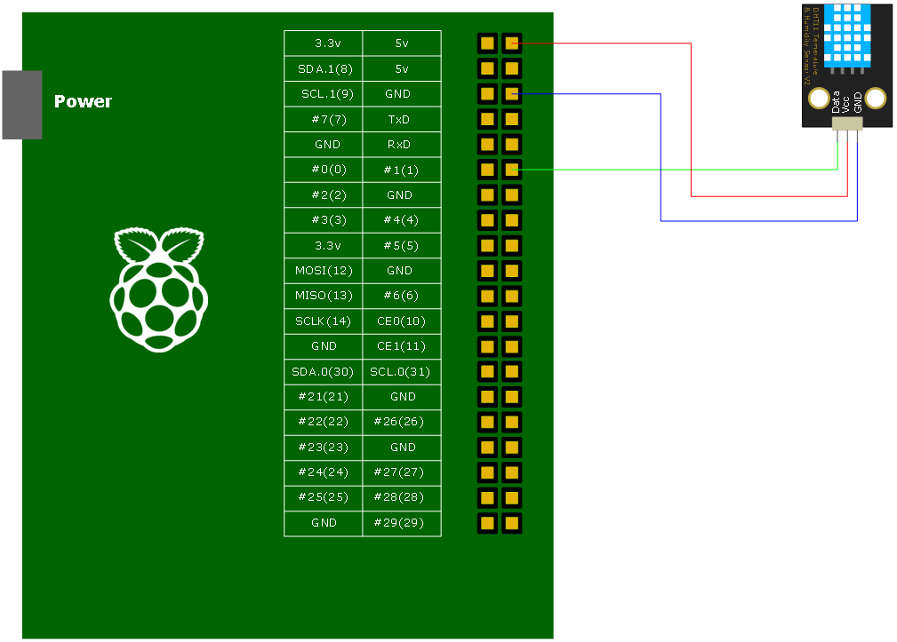

DHT11 Library를 이용하여 Application을 만들어 보자. 기본적으로 모든 작업은 Raspberry Pi안에서 이루어 지며 rano epics 기본 구조를 따른다. 테스트에 사용된 하드웨어 구성은 다음과 같다.
DHT11 Library는 wiringPi Library를 필요로 한다. 설치되어 있지 않다면 우선 wiringPi를 설치하도록 하자.
pi@ctrlpi3 ~$ git clone git://git.drogon.net/wiringPi
Cloning into 'wiringPi'...
remote: Counting objects: 657, done.
remote: Compressing objects: 100% (599/599), done.
remote: Total 657 (delta 476), reused 95 (delta 58)
Receiving objects: 100% (657/657), 247.61 KiB | 94 KiB/s, done.
Resolving deltas: 100% (476/476), done.
다운받은 wiringPi를 빌드한다.
pi@ctrlpi3 ~$ cd wiringPi pi@ctrlpi3 ~/wiringPi$ ./build
wiringPi가 준비되었으면 siteLibs로 이동하자. siteLibs가 없다면 svn에서 내려 받는다. 만약 siteLibs가 있다면 raspDHTLib폴더가 있는지 확인 한 후 없다면 마찬가지로 svn에서 내려 받는다.
pi@ctrlpi3 ~/epics/R3.14.12.4 $ svn co svn://10.1.5.14/raon/trunk/siteLibs
siteLibs/raspDHT11Lib 폴더로 이동한 후 make를 실행한다.
pi@ctrlpi3 ~/epics/R3.14.12.4 $ cd siteLibs/raspDHT11Lib pi@ctrlpi3 ~/epics/R3.14.12.4/siteLibs/raspDHT11Lib $ make
make가 완료되면 siteLibs/lib/linux-arm 폴더에 libraspDHT11.a 와 libraspDHT11.so 파일이 생성된다.
이제 siteApps폴더로 이동한 후 App폴더 하나를 만든다. siteApps폴더가 없다면 svn으로 부터 내려 받는다.
pi@ctrlpi3 ~/epics/R3.14.12.4 $ svn co svn://10.1.5.14/raon/trunk/siteApps
siteApps 폴더안에 dht11폴더를 생성한 다음 기본 ioc 구조를 만든다.
pi@ctrlpi3 ~/epics/R3.14.12.4 $ cd siteApps pi@ctrlpi3 ~/epics/R3.14.12.4/siteApps $ mkdir dht11 pi@ctrlpi3 ~/epics/R3.14.12.4/siteApps $ cd dht11 pi@ctrlpi3 ~/epics/R3.14.12.4/siteApps/dht11 $ makeBaseApp.pl -t ioc dht11 pi@ctrlpi3 ~/epics/R3.14.12.4/siteApps/dht11 $ makeBaseApp.pl -i -t ioc dht11 Using target architecture linux-arm (only one available) The following applications are available: dht11 What application should the IOC(s) boot? The default uses the IOC's name, even if not listed above. Application name? dht11
dht11App/src 폴더로 이동하면 dht11Main.cpp와 Makefile이 있다. Makefile에 다음 코드를 추가한다.
Makefile TOP=../.. include $(TOP)/configure/CONFIG USR_INCLUDES += -I$(RAON_SITELIBS)/include USR_DBDFLAGS += -I$(RAON_SITELIBS)/dbd USR_INCLUDES += -I$(EPICS_EXTENSIONS)/include USR_INCLUDES += -I/home/pi/wiringPi/wiringPi wiringPi_DIR += /home/pi/wiringPi/wiringPi /home/pi/wiringPi/devLib raspDHT11_DIR += $(RAON_SITELIBS)/lib/$(T_A) #---------------------------------------- # ADD MACRO DEFINITIONS AFTER THIS LINE #============================= #============================= # Build the IOC application PROD_IOC = dht11 # dht11.dbd will be created and installed DBD += dht11.dbd # dht11.dbd will be made up from these files: dht11_DBD += base.dbd # Include dbd files from all support applications: #dht11_DBD += xxx.dbd dht11_DBD += devDHT11.dbd # Add all the support libraries needed by this IOC #dht11_LIBS += xxx dht11_LIBS += raspDHT11 dht11_LIBS += wiringPi # dht11_registerRecordDeviceDriver.cpp derives from dht11.dbd dht11_SRCS += dht11_registerRecordDeviceDriver.cpp # Build the main IOC entry point on workstation OSs. dht11_SRCS_DEFAULT += dht11Main.cpp dht11_SRCS_vxWorks += -nil- # Add support from base/src/vxWorks if needed #dht11_OBJS_vxWorks += $(EPICS_BASE_BIN)/vxComLibrary # Finally link to the EPICS Base libraries dht11_LIBS += $(EPICS_BASE_IOC_LIBS) #=========================== include $(TOP)/configure/RULES #---------------------------------------- # ADD RULES AFTER THIS LINE
dht11App/Db 폴더로 이동 후 dht11.db 파일을 만들고 Makefile에 추가해 준다.
dht11.db
record(ai, "tem")
{
field(DTYP, "DHT11")
field(SCAN, "1 second")
field(INP, "@1 temperature")
}
record(ai, "hum")
{
field(DTYP, "DHT11")
field(SCAN, "1 second")
field(INP, "@1 humidity")
}
Makefile TOP=../.. include $(TOP)/configure/CONFIG #---------------------------------------- # ADD MACRO DEFINITIONS AFTER THIS LINE #---------------------------------------------------- # Optimization of db files using dbst (DEFAULT: NO) #DB_OPT = YES #---------------------------------------------------- # Create and install (or just install) into/db # databases, templates, substitutions like this #DB += xxx.db DB += dht11.db #---------------------------------------------------- # If .db template is not named *.template add # _template = include $(TOP)/configure/RULES #---------------------------------------- # ADD RULES AFTER THIS LINE
dht11폴더로 이동한 후 make를 실행한다. make가 완료되면 bin/linux-arm 폴더에 dht11 파일과 db폴더에 dht11.db 파일이 생성된다.
ioc를 실행하기 위해 iocBoot/iocdht11 폴더로 이동하여 st.cmd파일에 dht11.db를 추가해 준다.
st.cmd
#!../../bin/linux-arm/dht11
## You may have to change dht11 to something else
## everywhere it appears in this file
< envPaths
cd ${TOP}
## Register all support components
dbLoadDatabase "dbd/dht11.dbd"
dht11_registerRecordDeviceDriver pdbbase
## Load record instances
#dbLoadRecords("db/xxx.db","user=piHost")
dbLoadRecords("db/dht11.db")
cd ${TOP}/iocBoot/${IOC}
iocInit
## Start any sequence programs
#seq sncxxx,"user=piHost"
st.cmd를 실행파일로 변경한 후 실행한다.
pi@ctrlpi3 ~/epics/R3.14.12.4/siteApps/dht11/iocBoot/iocdht11 $ chmod 755 st.cmd pi@ctrlpi3 ~/epics/R3.14.12.4/siteApps/dht11/iocBoot/iocdht11 $ sudo ./st.cmd #!../../bin/linux-arm/dht11 ## You may have to change dht11 to something else ## everywhere it appears in this file < envPaths epicsEnvSet("ARCH","linux-arm") epicsEnvSet("IOC","iocdht11") epicsEnvSet("TOP","/home/pi/epics/R3.14.12.4/siteApps/dht11") epicsEnvSet("EPICS_BASE","/home/pi/epics/R3.14.12.4/base") cd /home/pi/epics/R3.14.12.4/siteApps/dht11 ## Register all support components dbLoadDatabase "dbd/dht11.dbd" dht11_registerRecordDeviceDriver pdbbase ## Load record instances #dbLoadRecords("db/xxx.db","user=piHost") dbLoadRecords("db/dht11.db") cd /home/pi/epics/R3.14.12.4/siteApps/dht11/iocBoot/iocdht11 iocInit Starting iocInit ############################################################################ ## EPICS R3.14.12.4 $Date: Mon 2013-12-16 15:51:45 -0600$ ## EPICS Base built Aug 29 2014 ############################################################################ iocRun: All initialization complete ## Start any sequence programs #seq sncxxx,"user=piHost" epics>
온습도 값이 제대로 읽어지면 끝!
epics> dbpr hum ASG: DESC: DISA: 0 DISP: 0 DISV: 1 NAME: hum RVAL: 46 SEVR: NO_ALARM STAT: NO_ALARM SVAL: 0 TPRO: 0 VAL: 46 epics> dbpr tem ASG: DESC: DISA: 0 DISP: 0 DISV: 1 NAME: tem RVAL: 27 SEVR: NO_ALARM STAT: NO_ALARM SVAL: 0 TPRO: 0 VAL: 27 epics>